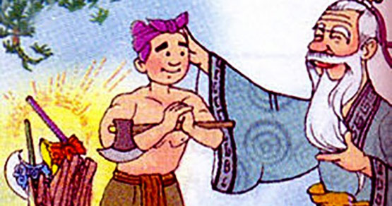

TRUYỆN CỔ TÍCH: "BA LƯỠI RÌU"
Ngày đăng: 19/05/2024
Xưa có một anh chàng tiều phu nghèo, cha mẹ anh bệnh nặng nên qua đời sớm, anh phải sống mồ côi cha mẹ từ nhỏ và tài sản của anh chỉ có một chiếc rìu. Hàng ngày anh phải xách rìu vào rừng để đốn củi bán để lấy tiền kiếm sống qua ngày. Cạnh bìa rừng có một con sông nước chảy rất xiết, ai đó lỡ trượt chân rơi xuống sông thì rất khó bơi vào bờ.
Một hôm, như thường ngày chàng tiều phu vác rìu vào rừng để đốn củi, trong lúc đang chặt củi cạnh bờ sông thì chẳng may chiếc rìu của chàng bị gãy cán và lưỡi rìu văng xuống sông. Vì dòng sông nước chảy quá xiết nên mặc dù biết bơi nhưng anh chàng vẫn không thể xuống sông để tìm lưỡi rìu. Thất vọng anh chàng tiều phu ngồi khóc than thở.

Bỗng từ đâu đó có một ông cụ tóc trắng bạc phơ, râu dài, đôi mắt rất hiền từ xuất hiện trước mặt chàng, ông cụ nhìn chàng tiêu phu và hỏi:
-Này con, con đang có chuyện gì mà ta thấy con khóc và buồn bã như vậy?
Anh chàng tiều phu trả lời ông cụ:
-Thưa cụ, bố mẹ cháu mất sớm, cháu phải sống mồ côi từ nhỏ, gia cảnh nhà cháu rất nghèo, tài sản duy nhất của cháu là chiếc rìu sắt mà bố mẹ cháu trước lúc qua đời để lại. Có chiếc rìu đó cháu còn vào rừng đốn củi kiếm sống qua ngày, giờ đây nó đã bị rơi xuống sông, cháu không biết lấy gì để kiếm sống qua ngày nữa. Vì vậy cháu buồn lắm cụ ạ!
Ông cụ đáp lời chàng tiều phu:
-Ta tưởng chuyện gì lớn, cháu đừng khóc nữa, để ta lặn xuống sông lấy hộ cháu chiếc rìu lên.
Dứt lời, ông cụ lao mình xuống dòng sông đang chảy rất xiết. Một lúc sau, ông cụ ngoi lên khỏi mặt nước tay cầm một chiếc rìu bằng bạc sáng loáng và hỏi anh chàng tiều phu nghèo:
-Đây có phải lưỡi rìu mà con đã làm rơi xuống không ?
Anh chàng tiều phu nhìn lưỡi rìu bằng bạc thấy không phải của mình nên anh lắc đầu và bảo ông cụ:
-Không phải lưỡi rìu của cháu cụ ạ, lưỡi rìu của cháu bằng sắt cơ.
Lần thứ hai, ông cụ lại lao mình xuống dòng sông chảy xiết để tìm chiếc rìu cho chàng tiều phu. Một lúc sau, ông cụ ngoi lên khỏi mặt nước tay cầm chiếc rìu bằng vàng và hỏi chàng tiều phu:
-Đây có phải là lưỡi rìu mà con đã sơ ý làm rơi xuống sông không?
Anh chàng tiều phu nhìn lưỡi rìu bằng vàng sáng chói, anh lại lắc đầu và bảo:
-Không phải là lưỡi rìu của con cụ ạ
Lần thứ ba, ông cụ lại lao mình xuống sông và lần này khi lên ông cụ cầm trên tay là chiếc rìu bằng sắt của anh chàng tiều phu đánh rơi. Ông cụ lại hỏi:
-Vậy đây có phải là lưỡi rìu của con không!
Thấy đúng là lưỡi rìu của mình rồi, anh chàng tiều phu reo lên sung sướng:
-Vâng cụ, đây đúng là lưỡi rìu của con, con cảm ơn cụ đã tìm hộ con lưỡi rìu để con có cái đốn củi kiếm sống qua ngày.
-Con quả là người thật thà và trung thực, không hề ham tiền bạc và lợi lộc. Nay ta tặng thêm cho con hai lưỡi rìu bằng vàng và bạc này. Đây là quà ta tặng con, con cứ vui vẻ nhận.

Anh chàng tiều phu vui vẻ đỡ lấy hai lưỡi rìu mà ông cụ tặng và cảm tạ. Ông cụ hóa phép và biến mất. Lúc đó anh chàng tiều phu mới biết rằng mình vừa được bụt giúp đỡ.
Đây là câu chuyện điển hình khi nhắc tới đức tính trung thực. Tác giả viết câu chuyện này nhằm mục đích ca ngợi những con người thật thà, trung thực, không ham vật chất. Những ai nếu như anh tiều phu, không bao giờ tham những thứ không phải của mình, luôn chân thành thật thà thì cuối cùng sẽ được giúp đỡ lại có được thành công và hạnh phúc. Trong cuộc sống, không nên vì lợi ích vật chất mà bán rẻ đi sự chân thật của lương tâm, hãy luôn thành thật với người khác và với chính bản thân mình.